이미지를 누르면 크게 볼 수 있어요 (←/→ 이동, ESC 닫기). 고르신 안을 알려주시면 게임에 넣을게요.
칸 사이를 넓히고, 잠금은 카드 오른쪽 위로 옮겼어요. 판매 중은 체크 대신 리본·스위치·버튼으로 바로 알 수 있게 했어요.
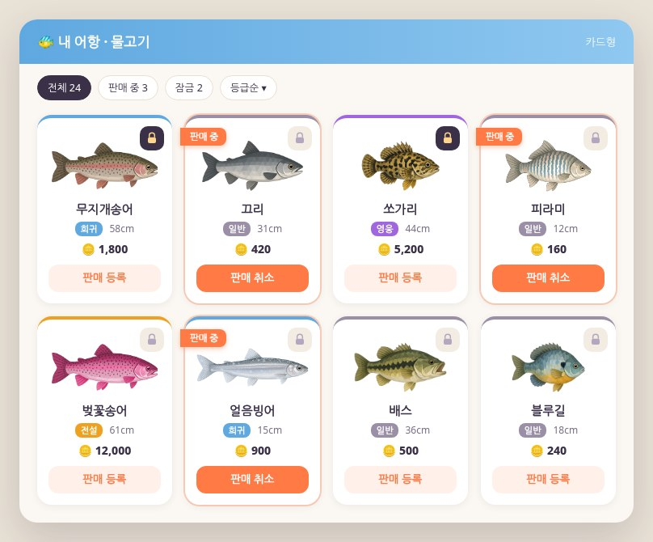
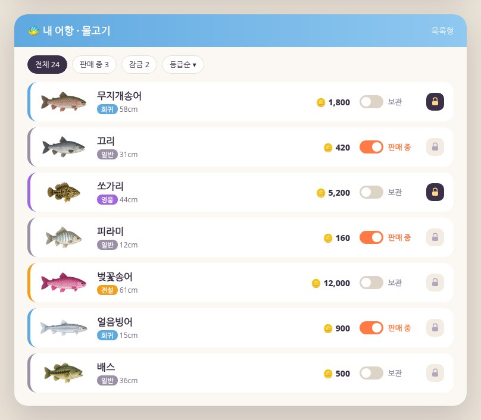
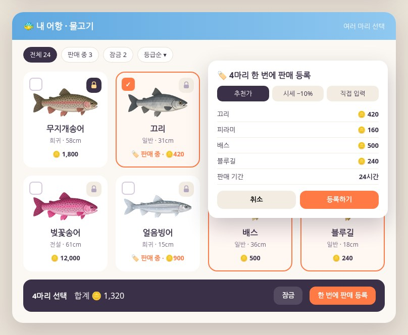
3D 물고기 대신 들어갈 화면이에요.
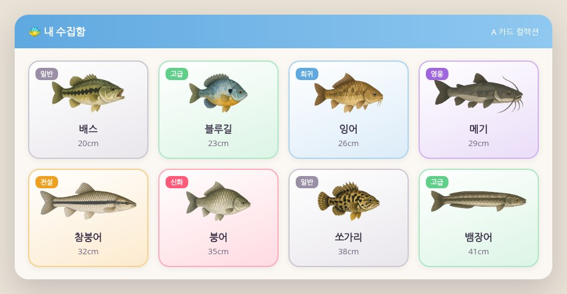
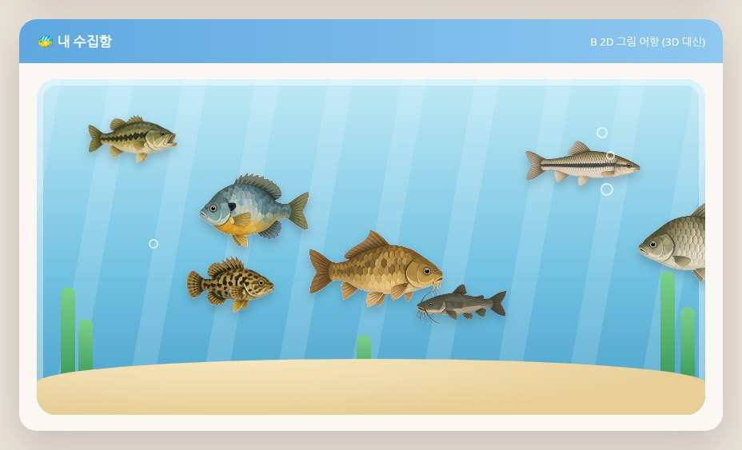
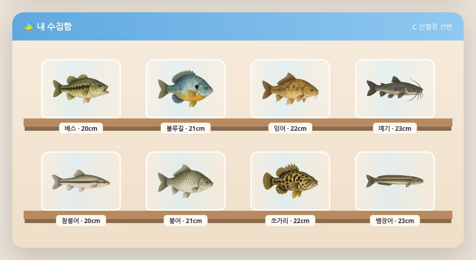
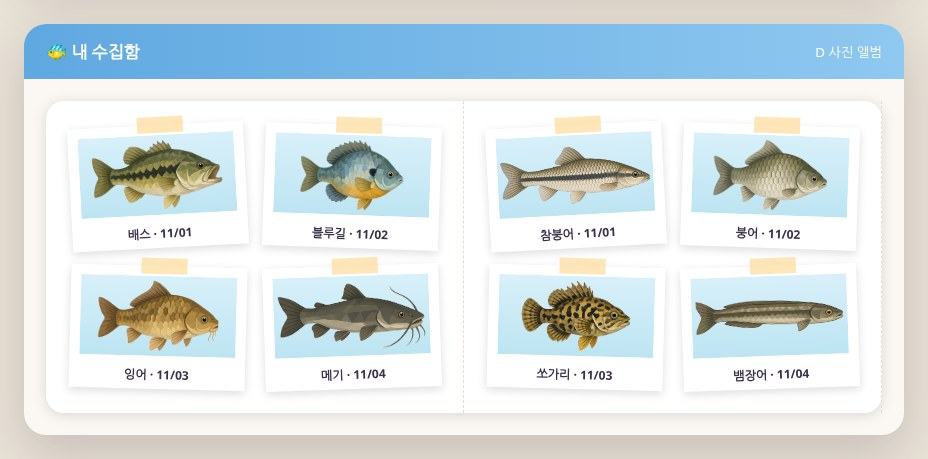
지금은 데크 하나에 한 명만 앉을 수 있어요. 실제 게임 장면에 두 자리가 보이게 만들어 찍었어요.
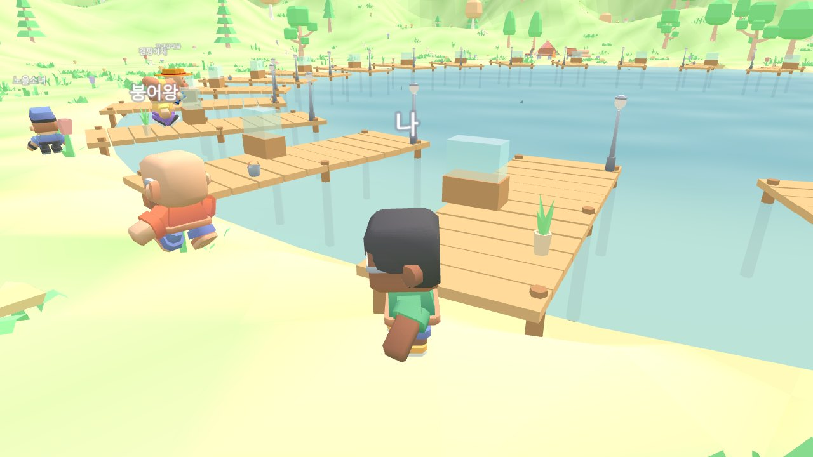
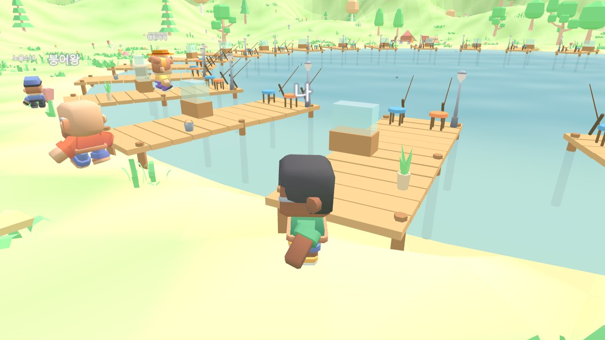
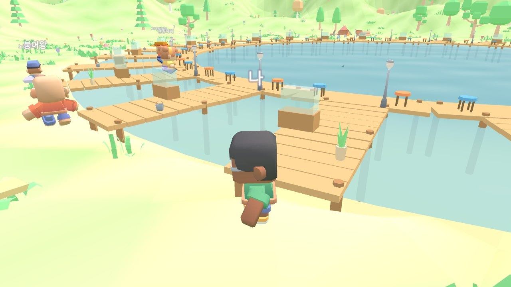
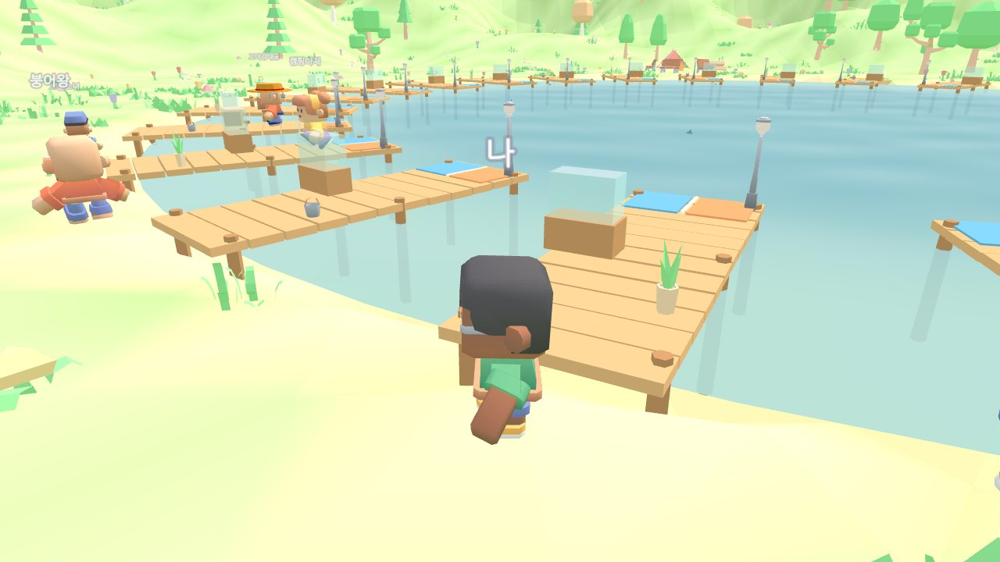
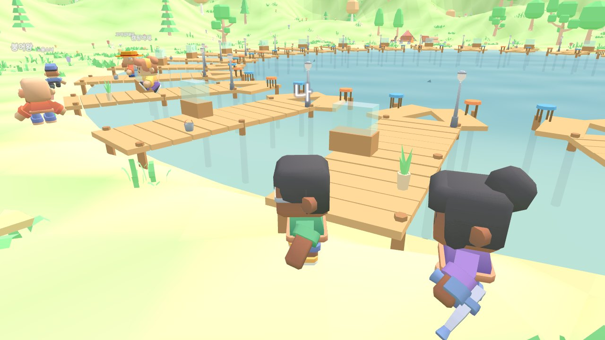
지금 게임에 쓰는 캐릭터 모델을 그대로 쓰고 옷 색만 바꿨어요. 맨 왼쪽이 현행 캐릭터예요.
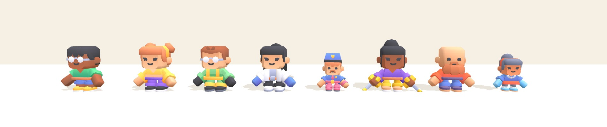
현행 캐릭터처럼 머리가 큰 블록형 비율로 Three.js에서 직접 만들었어요. 맨 왼쪽이 현행 캐릭터예요. 솔직히 현행 모델의 둥근 모서리와 색 그러데이션 텍스처는 따라가지 못해서 한 단계 단순해 보여요.
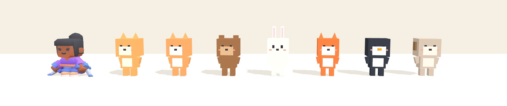